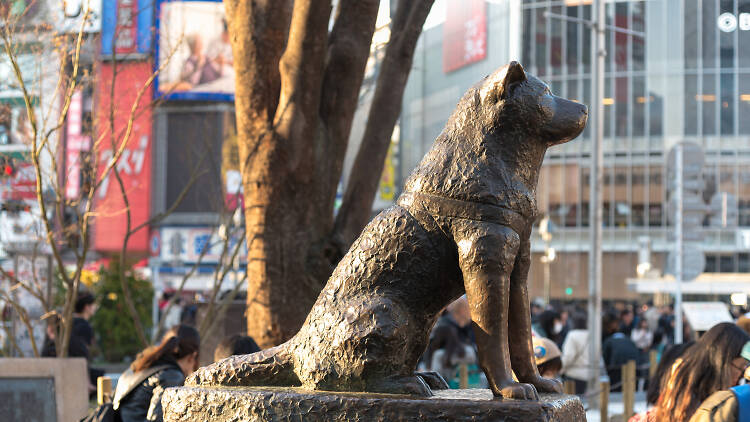
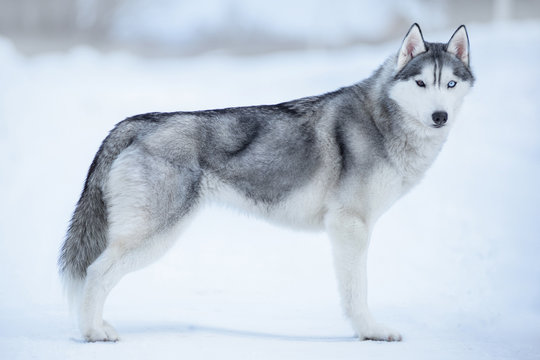

The Story of Hachiko – Japan's Loyal Dog
- Born in 1923 in Akita Prefecture, Japan.
- Adopted by Professor Hidesaburō Ueno of Tokyo University.
- Every day, Hachikō waited at Shibuya Station for his owner to return from work.
- In 1925, the professor suddenly passed away — but Hachikō continued waiting.
- For nearly 10 years, Hachikō came to the station daily, hoping his master would return.
- In 1934, a bronze statue of Hachikō was built at Shibuya Station, with Hachikō attending the unveiling.
- Even today, Hachikō is remembered in Japan as a symbol of loyalty, love, and devotion.
Balto – The Brave Sled Dog
- In 1925, a deadly outbreak of diphtheria struck the small town of Nome, Alaska.
- The only way to get life-saving medicine was by dog sled teams traveling through dangerous blizzards and freezing temperatures.
- Balto, a Siberian Husky, led the final leg of the 674-mile journey, navigating through whiteout snowstorms and nearly impossible conditions.
- Against all odds, Balto and his team delivered the serum and saved countless lives.
- He became a national hero, a symbol of courage, endurance, and loyalty.
- Today, a statue of Balto stands in Central Park, New York City, honoring the dog who led with heart when lives were on the line.
